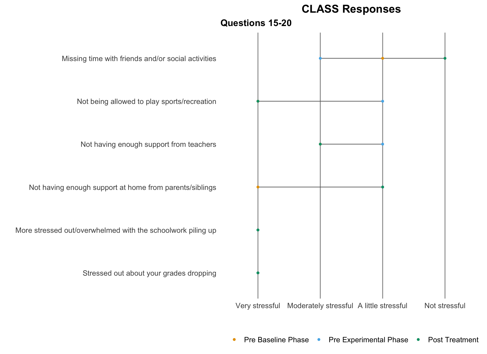
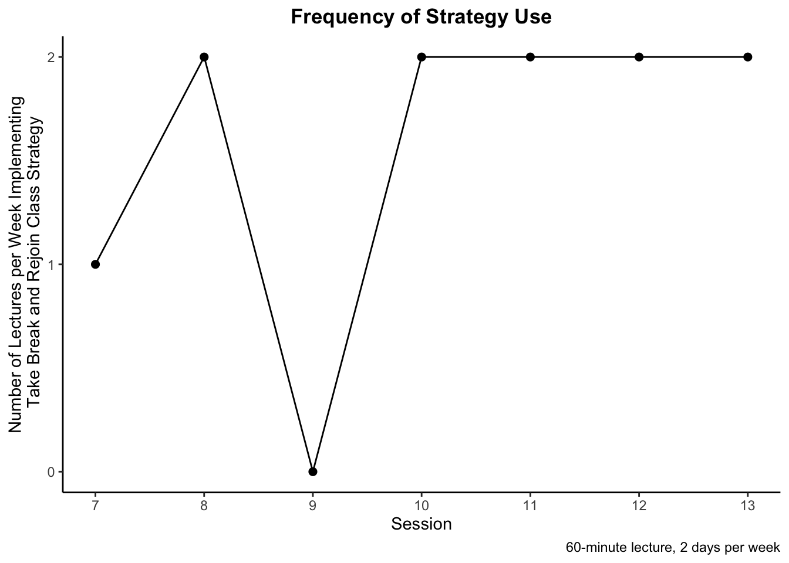
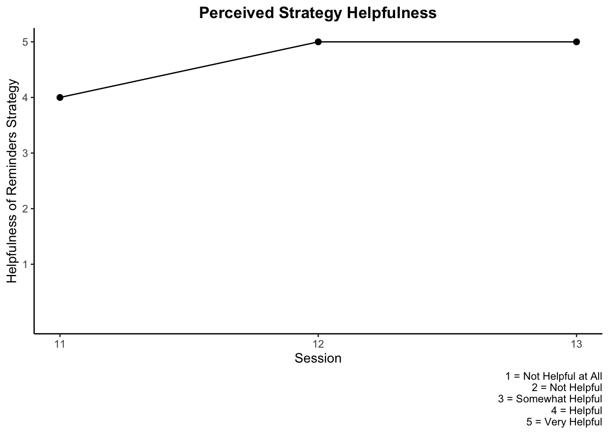

Participant 1
Demographic Information
| Participant Demographics | |||
|---|---|---|---|
| Sex | Age | Prior Concussions | History of Depression or Anxiety |
| Female | 16 | 0 | No |
Outcome Measurements
During the final session when discussing final outcome measurements (specifically the BRIEF, CLASS, and PCSS), the participant believed the general, negative trend in her responses across the three time points of collection was due to the demands of school. The participant enrolled in the study at the beginning of her school year where she believed her concussion was not severely impacting her academic performance. As the school year progressed in tandem with the study, she believed the increase in her academic demands was exacerbated by her concussion (e.g. much more time looking at a screen compared to the summer).
The participant also reported that increased awareness to her perceived deficits influenced her responses on the post-treatment outcome measurements.
GAS Hierarchy - Number of minutes per class engaged in online Literature lecture (60 minute class)
BRIEF-2
Self-report responses that guided treatment at time of pre-baseline data collection:
- Self-Monitor Scale
- Task Completion Scale
- Plan/Organize Scale
- Cognitive Regulation Index
There were no scores in the clinically significant range on the pre-baseline parent-response. The highest score was the Working Memory scale, with a T-score of 62. The Working Memory scale increased to a clinically significant T-score of 67 on the post-treatment parent-response. Also, the Organization of Materials scale was observed to be clinically significant on the post-treatment parent-response (T-score = 67). Overall, the parent-response total scores remained relatively similar. Decreases in the BRI and ERI from pre-treatment to post-treatment were observed, while the CRI was observed to increase from pre- to post-treatment.
Across the board, most self-report scale/index scores remained elevated or even increased, which may demonstrate increased self-awareness or increased self-perception of challenges.
BRIEF-2 Self-Report
BRIEF-2 Self-Report Table Version 1
BRIEF-2 Self-Report Table Version 2
BRIEF-2 Parent-Report
BRIEF-2 Parent-Report Version 1
BRIEF-2 Parent-Report Table Version 2
CLASS
Self-report responses that guided treatment at time of pre-baseline data collection:
- Difficulty understanding new material
- Trouble remembering what was studied
Parent-report responses that guided treatment at time of pre-baseline data collection:
- Difficulty understanding new material
- Trouble remembering what was studied
CLASS Self 1
CLASS Self 2

CLASS Self Table
CLASS Parent 1
CLASS parent 2
CLASS Parent Table
PCSS
Pre-baseline symptom severity levels that guided treatment selection:
- Difficulty concentrating
- Feeling “slow”
- Feeling “foggy”
- Cognitive symptom cluster
All Scores
Symptom Scores
Total and Cluster Scores
Repeated Measurements
Status Tracking Measurement
Repeated Strategy Measurements
Cognitive Strategy: Engage in online lecture for 15 minutes removed from distractions, take a 5-minute break, and rejoin online lecture for at least 15 more minutes.
Cognitive Strategy 2: Set reminders in phone to remember to take a break during lecture (developed during session 10 to be measured sessions 11-13). Participant will adhere to the two set reminders per week.
- Discussion to add additional reminders to best utilize strategy to re-engage in lecture (6 reminders per class lecture) occurred during session 12. Strategy adjusted to adhere to the 12 set reminders per week.
Frequency of Use of Break Strategy

Perceived Helpfulness of Break Strategy
Frequency of Use of Reminders Strategy
Participant reported she only attended one class period prior to session 13 due to the start of the holiday break, which reduced her ability to adhere to all 12 reminders. She further clarified it was a reduced class period, so she only felt the need to adhere to 3 out of the 6 reminders per that class period to utilize the break strategy; however, she reported positive benefit of the reminders strategy.
Perceived Helpfulness of Reminders Strategy

Treatment Implementation Measurements
TARF
The TARF is used to measure social validity.
Treatment Compliance
Participant 1 rescheduled her tenth session two consecutive weeks, resulting in two total canceled/rescheduled sessions.